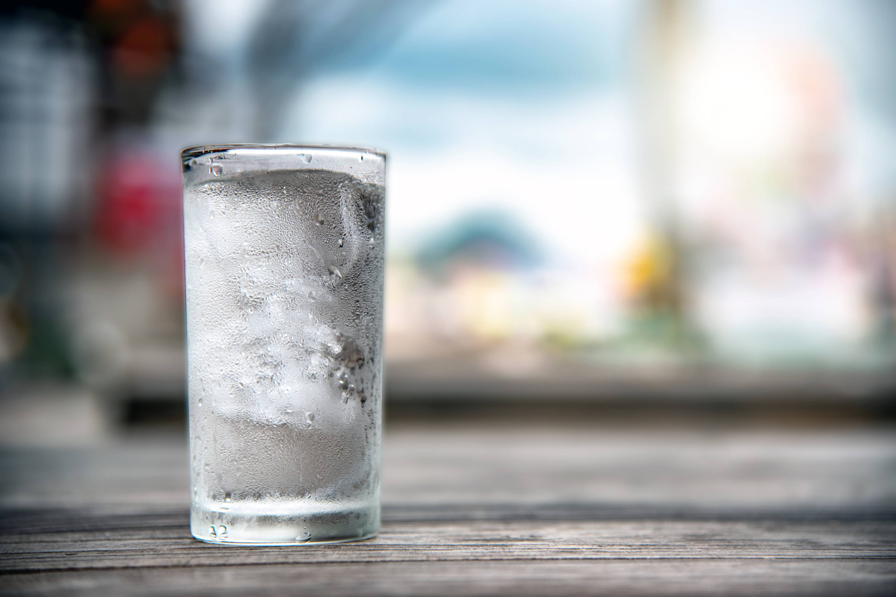

Cold Water

Description
This is how you make a cup of cold water. The ingredients are pretty simple.
Ingredients
- 250g Water
- 50g Ice cubes
- Cup
Steps
- Pour water into cup
- Place ice cubes into cup
- Wait a moment for ice to cool down the water
Back to recipe list